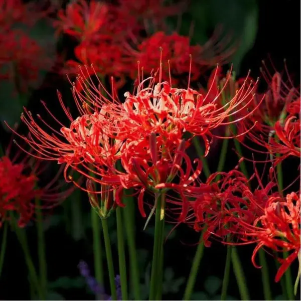
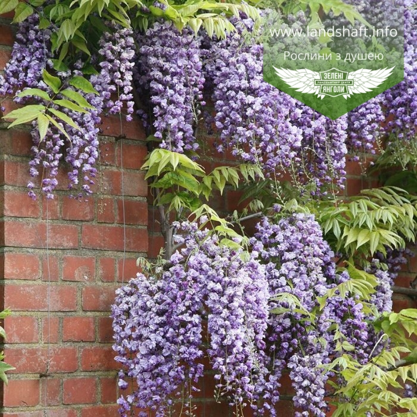
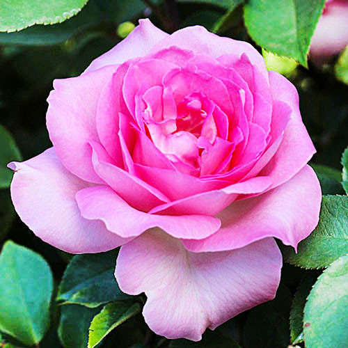
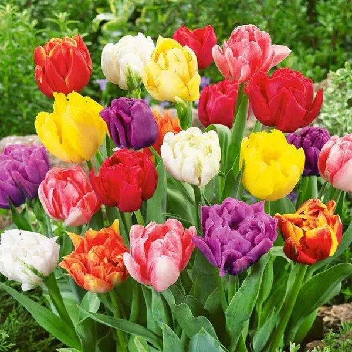
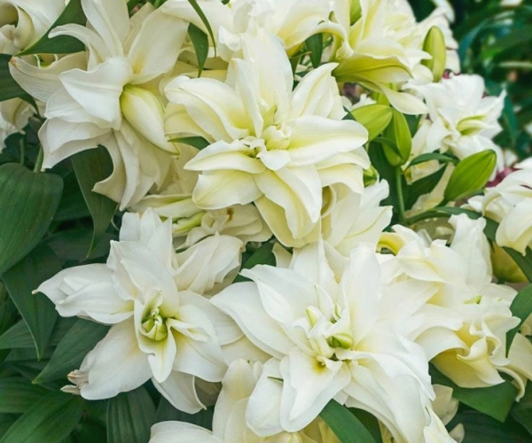
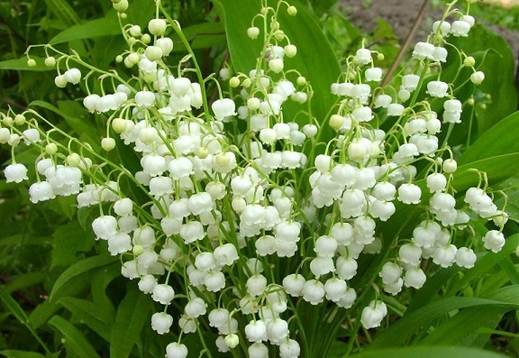
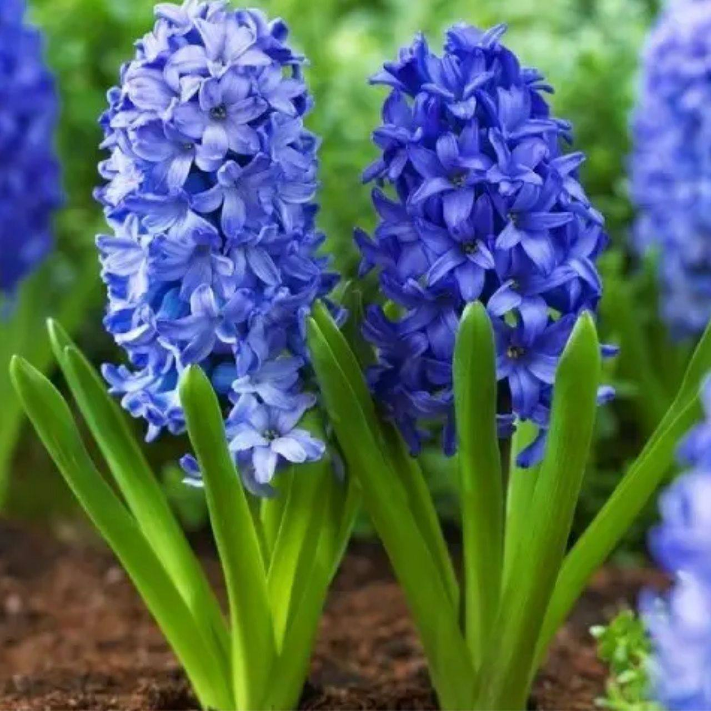
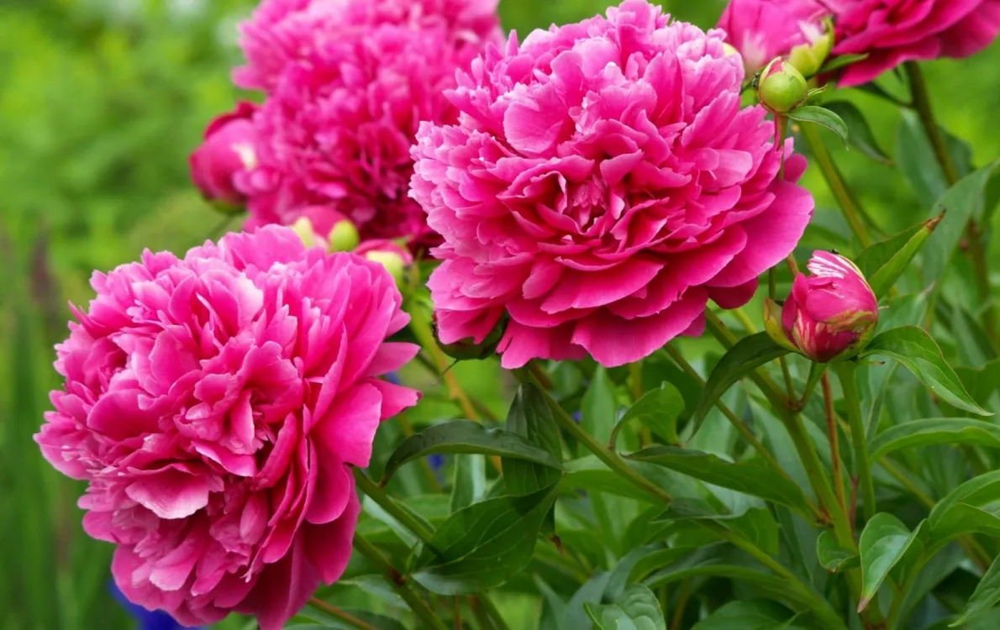
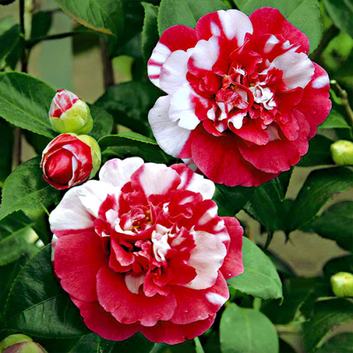
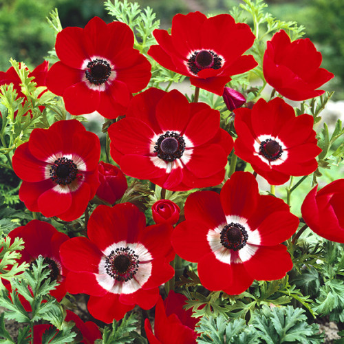

Лікоріс
Ефектна декоративна рослина, відома своїми яскравими квітками на довгих стеблах.
Цікаві факти:
- Називається також "павуча лілія".
- Квітне восени, коли на стеблі немає листя.

Гліцинія
Кущ із довгими каскадами фіолетових або рожевих квітів, справжня окраса альтанок.
Цікаві факти:
- Може жити понад 100 років.
- В Японії є фестиваль, присвячений гліцинії.

Троянда
Одна з найвідоміших декоративних рослин з різноманіттям сортів і ароматів.
Цікаві факти:
- Існує понад 300 видів троянд.
- Символ кохання у багатьох культурах.

Тюльпан
Весняна цибулинна квітка з багатством кольорів і форм.
Цікаві факти:
- У XVII столітті викликали “тюльпанову лихоманку” в Голландії.
- Символізує відродження і весну.

Лілія
Квітка з ніжним ароматом і вишуканим виглядом, що символізує чистоту.
Цікаві факти:
- Зображалася ще в єгипетських гробницях.
- Деякі види мають лікувальні властивості.

Конвалія
Ніжна біла квітка з тонким ароматом, часто росте в лісах.
Цікаві факти:
- Є символом надії та відродження.
- У Франції є день конвалії (1 травня).

Гіацинт
Яскрава весняна квітка з багатим ароматом, популярна в садівництві.
Цікаві факти:
- Названа на честь героя давньогрецької міфології.
- Може рости навіть у воді.

Півонія
Одна з найпишніших квіток, яка асоціюється з розкішшю та урочистістю.
Цікаві факти:
- У Китаї вважається квіткою імператорів.
- Може жити на одному місці понад 50 років.

Камелія
Вічнозелений кущ з блискучим листям та чудовими квітками.
Цікаві факти:
- Названа на честь ботаніка Камеліуса.
- Символізує витонченість та стійкість.

Анемона
Ніжна весняна рослина з широким спектром кольорів і форм пелюсток.
Цікаві факти:
- Інша назва — вітряниця, оскільки її квітки коливає вітер.
- Згадана у творах давньогрецьких поетів.